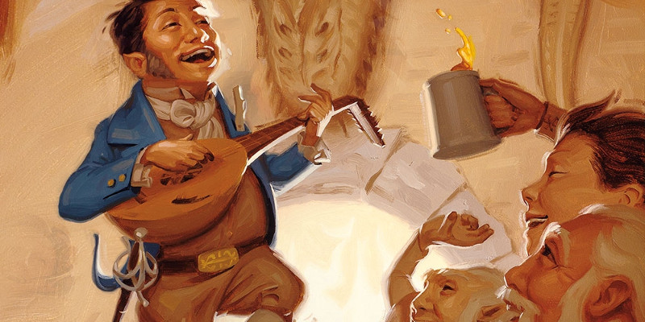

Collèges bardiques
Au niveau 3, un barde gagne la capacité Collège bardique. Voici de nouvelles options de collèges :
- Collège de la séduction
- Collège des murmures
- Collège de l'éloquence
- Collège de la création
- Collège des esprits
Collège de la séduction
Le collège de la séduction est ouvert à ces bardes qui pratiquent leur art dans le vibrant et mortel royaume de la Féerie. Guidés par des satyres, des éladrins et autres êtres féeriques, ces bardes apprennent à utiliser leur magie pour charmer et captiver les autres. Les bardes de ce collège inspirent un mélange de crainte et de peur. Leurs prestations sont légendaires. Ils sont si éloquents qu'un discours ou une chanson de l'un d'entre eux peut pousser des ravisseurs à libérer leur captif sain et sauf, ou calmer un dragon furieux au point de le rendre complaisant. Et cette magie qui leur permet d'apaiser les bêtes peut également plier les esprits. Les vils bardes de ce collège peuvent s’immiscer au sein d'une communauté pendant des semaines, abusant de leur magie pour réduire leurs hôtes en esclavage.
Manteau d'inspiration
Lorsque vous rejoignez le collège de la séduction au niveau 3, vous gagnez la possibilité de tisser une chanson grâce à la magie des fées qui remplit vos alliés de vigueur et de rapidité. En tant qu'action bonus, vous pouvez dépenser une utilisation d'Inspiration bardique pour vous donner une apparence merveilleuse. Lorsque vous le faites, vous choisissez un nombre d'alliés que vous pouvez voir et situés dans un rayon de 18 mètres autour de vous, jusqu'à un nombre égal à votre modificateur de Charisme (minimum 1). Chaque cible gagne 2d6 points de vie temporaires et la possibilité d'utiliser une réaction pour se déplacer à sa vitesse dans votre direction sans provoquer d'attaque d'opportunité. Elle doit prendre le chemin le plus court et le moins dangereux jusqu'à vous. Le nombre de points de vie temporaires augmente lorsque vous progressez dans cette classe. 2d8 au niveau 5, 2d10 au niveau 10, et 2d12 au niveau 15.
Spectacle asservissant
À partir du niveau 3, vous pouvez imprégner vos prestations de magie féerique séductrice. Si vous effectuez une représentation pendant au moins 10 minutes, vous pouvez provoquer un sentiment d'émerveillement au sein de votre audience, si vous chantez, récitez un poème ou dansez. À la fin de votre prestation, vous choisissez un nombre de spectateurs humanoïdes qui ont pu voir tout votre spectacle et qui sont situés dans un rayon de 18 mètres autour de vous, jusqu'à un maximum ne dépassant pas votre modificateur de Charisme (minimum 1). Chaque cible doit réussir un jet de sauvegarde de Sagesse contre le DD de sauvegarde de vos sorts ou être charmée. Tant qu'elles sont sous votre charme, les cibles vous idéalisent, dressent un chaleureux portrait de vous à tous ceux qui leur parlent, et s'interposent entre vous et d'éventuels opposants, en évitant la violence, à moins qu'elles ne fussent déjà enclines à se battre pour vous. Pour chaque cible, l'effet cesse après 1 heure, si elle prend des dégâts, si vous l'attaquez, ou si elle vous surprend en train d'attaquer un de ses alliés. Si la cible a réussi son jet de sauvegarde, elle ne se rend toutefois pas compte que vous avez essayé de la charmer. Une fois que vous avez utilisé cette capacité, vous devez terminer un repos court ou long avant de pouvoir l'utiliser à nouveau.
Manteau de Majesté
Au niveau 6, vous gagnez la possibilité de vous draper de magie féerique, ce qui pousse les autres à vous servir. Pour une action bonus, vous pouvez prendre l'apparence d'une beauté surnaturelle pendant 1 minute. Pendant cette durée vous pouvez lancer le sort injonction en tant qu'action bonus à chacun de vos tours, sans utiliser d'emplacement de sort. Cet effet dure 1 minute et toute créature que vous charmez rate automatiquement son jet de sauvegarde contre le sort. Une fois que vous avez utilisé cette capacité, vous devez terminer un repos long avant de pouvoir l'utiliser à nouveau
Majesté inébranlable
Au niveau 14, vous obtenez un aspect d'un autre monde qui vous rend plus fier et plus charmant. De plus, grâce à cette capacité, vous pouvez lancer le sort sanctuaire sur vous-même. Si une créature échoue à un jet de sauvegarde contre le sort, vous gagnez également un avantage à tous les jets de Charisme contre cette créature pendant 1 minute, et celle-ci a un désavantage à tous ses jets de sauvegarde contre vos sorts lors de votre prochain tour. Une fois que vous avez lancé sanctuaire grâce à cette capacité, vous devez terminer un repos court ou long avant de pouvoir le faire à nouveau.
Collège des murmures
Version officielle du Xanathar's Guide to Everything de cette sous-classe publiée initialement dans la rubrique Unearthed Arcana.
La plupart des gens sont heureux d'accueillir un barde parmi eux et les bardes du collège des murmures en profitent. Ils ressemblent à tous les autres bardes, partagent des nouvelles, chantent des chansons et racontent des histoires au public qu'ils rassemblent. Mais en vérité, le collège des murmures enseigne à ses étudiants qu'ils sont des loups parmi les moutons. Ces bardes utilisent leurs connaissances et leur magie pour découvrir des secrets et les retourner contre d'autres via extorsions et menaces. Beaucoup d'autres bardes détestent le collège des murmures, le considérant comme un parasite qui utilise la réputation des bardes pour acquérir richesse et pouvoir. Pour cette raison, ces bardes révèlent rarement leur véritable nature, à moins que cela ne soit nécessaire. Ils prétendent généralement suivre un autre collège, ou garder leur véritable nature secrète afin de mieux s'infiltrer et exploiter les cours royales et autres lieux du pouvoir.
Lames psychiques
Lorsque vous rejoignez le collège des murmures au niveau 3, vous gagnez la capacité de rendre magiquement toxiques vos attaques avec une arme pour l'esprit d'une créature. Lorsque vous touchez une créature lors d'une attaque avec une arme, vous pouvez dépenser une utilisation de votre Inspiration bardique pour infliger 2d6 dégâts psychiques supplémentaires à cette cible. Vous ne pouvez le faire qu'une seule une fois par round, à votre tour. Les dégâts supplémentaires augmentent lorsque vous atteignez certains niveaux dans cette classe, passant à 3d6 au niveau 5, 5d6 au niveau 10 et 8d6 au niveau 15.
Mots de terreur
Au niveau 3, vous apprenez à imprégner des mots innocents d'une magie insidieuse qui inspire la terreur. Si vous parlez à un humanoïde seul pendant au moins 1 minute, vous pouvez tenter de semer la paranoïa dans son esprit. À la fin de la conversation, la cible doit réussir un jet de sauvegarde de Sagesse contre le DD de sauvegarde de vos sorts ou être effrayée (par vous-même ou par une autre créature de votre choix). La cible est effrayée durant 1 heure, à moins qu'elle ne soit attaquée ou qu'elle subisse des dégâts avant, ou qu'elle voit que ses alliés sont attaqués ou subissent des dégâts. Si la cible réussit son jet de sauvegarde, elle n'a aucun idée que vous avez essayé de l'effrayer. Une fois cette capacité utilisée, vous devez terminer un repos court ou long pour pouvoir l'utiliser de nouveau.
Voile des murmures
Au niveau 6, vous obtenez la capacité d'adopter la personnalité d'une créature. Lorsque qu'une créature meurt dans un rayon de 9 mètres autour de vous, vous pouvez magiquement capturer son ombre en utilisant votre réaction. Vous retenez l'ombre jusqu'à ce que vous l'utilisiez ou que vous terminiez un repos long. Vous pouvez utiliser l'ombre avec une action. Dans ce cas, elle disparaît et vous prenez magiquement l'apparence de la créature morte. Ce déguisement dure 1 heure ou jusqu'à ce que vous y mettiez fin par une action bonus. Tant que vous êtes ainsi déguisé, vous avez accès à toutes les informations que l'humanoïde pourrait partager librement avec une connaissance occasionnelle. L'information comprend des détails généraux sur son contexte et sa vie personnelle, mais pas des secrets. L'information est suffisante pour que vous puissiez vous faire passer pour la personne en puisant dans ses souvenirs. Une autre créature peut voir à travers ce déguisement en réussissant un jet de Sagesse (Intuition) contre votre jet de Charisme (Tromperie). Vous avez toutefois un bonus de +5 à ce jet. Une fois que vous avez capturé une ombre avec cette capacité, vous ne pouvez plus en capturer d'autres avant d'avoir terminé un repos court ou long.
Savoir des ombres
Au niveau 14, vous gagnez la capacité de tisser la magie noire dans vos mots et de puiser dans les peurs les plus profondes d'une créature. Par une action, vous chuchotez magiquement une phrase que seule une créature de votre choix dans un rayon de 9 mètres autour de vous peut entendre. La cible doit faire un jet de sauvegarde de Sagesse contre le DD de sauvegarde de vos sorts. Elle réussit automatiquement si elle ne partage aucune langue avec vous ou si elle ne peut pas vous entendre. En cas de jet de sauvegarde réussi, votre murmure ressemble à un chuchotement inintelligible et n'a aucun effet. Si la cible échoue à son jet de sauvegarde, vous la charmez durant les 8 prochaines heures, ou jusqu'à ce que vous ou vos alliés l'attaquiez, lui infligiez des dégâts ou la forciez à effectuer un jet de sauvegarde. Elle interprète les murmures comme une description de son secret le plus mortifiant. Bien que vous n'obteniez aucune connaissance de ce secret, la cible est convaincue que vous le savez. Lorsqu'elle est charmée de cette façon, la créature obéit à vos ordres de peur que vous ne révéliez son secret. Elle ne risque pas sa vie pour vous et ne se battra pas pour vous, à moins qu'elle ne fût déjà encline à le faire, mais elle vous accorde des faveurs et des cadeaux qu'elle offrirait à un ami proche. Quand l'effet se termine, la créature n'a aucune idée de pourquoi elle avait si peur de vous. Une fois cette capacité utilisée, vous devez terminer un repos court ou long pour pouvoir l'utiliser de nouveau.
Collège de l'éloquence
Les membres du collège de l'éloquence sont des maîtres de l'art oratoire. Ils considèrent la persuasion comme un art majeur, et pensent qu'un argument raisonné et bien exposé s'avère souvent plus puissant qu'une vérité objective. Ces bardes manient un mélange d'expressions logiques et théâtrales, prenant le dessus sur les sceptiques et leurs détracteurs avec des arguments logiques, ou en faisant appel aux émotions de tout un public.
Discours universel
À partir du niveau 3, vous avez acquis la capacité de parler et de raisonner avec n'importe quelle créature. Par une action bonus, vous pouvez dépenser une Inspiration bardique. Dans ce cas, lancez le dé d'Inspiration bardique et choisissez un nombre de créatures dans un rayon de 18 mètres autour de vous et que vous pouvez voir égal au résultat du dé. Durant 10 minutes, les créatures choisies peuvent magiquement vous comprendre, quelle que soit la langue que vous parlez, et vous avez un avantage aux jets de Charisme pour les influencer. Cette capacité fonctionne même sur une créature qui ne parle aucune langue.
Mots apaisants
À partir du niveau 3, Vous pouvez lancer apaisement des émotions sans dépenser un emplacement de sort. Vous pouvez utiliser cette capacité un nombre de fois égal à votre modificateur de Charisme. Vous regagnez tous les usages de cette capacité après avoir terminé un repos long.
Logique incontestable
À partir du niveau 6, vous pouvez avec des mots magiques vous lancer dans un raisonnement qui peut être encourageant ou impossible à suivre. Par une action bonus, vous pouvez utiliser l'une de vos Inspirations bardiques. Dans ce cas, choisissez une créature que vous pouvez voir à 18 mètres ou moins de vous et qui peut vous entendre, puis lancez le dé d'Inspiration bardique et choisissez l’un des effets suivants :
- La créature subit des dégâts psychiques égaux au résultat du dé d'Inspiration bardique, et doit réussir un jet de sauvegarde d'Intelligence contre le DD de vos sorts ou avoir un désavantage à son prochain jet de sauvegarde avant la fin de votre prochain tour.
- La créature regagne un nombre de points de vie égal au résultat du dé d'Inspiration bardique, et obtient un avantage à son prochain jet de sauvegarde avant la fin de votre prochain tour.
Inspiration contagieuse
À partir du niveau 14, quand une créature ajoute l'un de vos dés d'Inspiration bardique à son jet de caractéristique, jet d'attaque ou jet de sauvegarde et que le jet échoue, la créature peut garder le dé d'Inspiration bardique. De plus, quand une créature ajoute l'un de vos dés d'Inspiration bardique à son jet de caractéristique, jet d'attaque ou jet de sauvegarde et que le jet réussit, vous pouvez utiliser votre réaction pour encourager une autre créature (autre que vous-même) qui peut vous entendre et située à 18 mètres ou moins de vous, lui donnant un dé d'Inspiration bardique sans que vous n'en dépensiez un autre. Vous pouvez utiliser cette réaction un nombre de fois égal à votre modificateur de Charisme (minimum 1 fois) et vous regagnez tous les usages de cette capacité après avoir terminé un repos long.
Collège de la création
Les bardes croient que le multivers a été créé par la parole et le son, des harmonies ésotériques qui continuent de résonner à travers l'existence : le Chant de la création. Les bardes de ce collège s'appuient sur ce pouvoir ancien à travers des spectacles de danse, de musique ou de chanson pour donner naissance à ce dont ils ont le plus besoin. Les membres de ce collège ont développé leur pouvoir au cours d'expériences sur d'autres mondes ou plans d'existence. Ceux qui ont vu les points communs de réalités multiples ont peut-être appris à exploiter les vérités que la plupart des mortels entrevoient seulement un instant. D'autre part, les bardes peuvent se retrouver eux-mêmes en décalage avec leur plan d'origine, réalité ou temps, leur connections avec « l'ailleurs » leur permettant de manipuler l'espace et le temps autour d'eux. Indépendamment de l'endroit d'où un barde tire ses pouvoirs, d'autres interprètes peuvent être attirés par eux, pour apprendre leurs secrets ou pour arrêter leur dangereuse utilisation du Chant de la création.
Note de potentiel
Capacité du collège de la création de niveau 3
Vous pouvez manipuler le Chant de la création pour invoquer une note flottante de possibilité. Chaque fois que vous donnez une Inspiration bardique à une créature, vous pouvez créer une Note de potentiel. La note gravite à 1,50 m autour de la créature. La note est un objet de taille TP qui est intangible et invulnérable, et dure jusqu'à ce que le dé d'Inspiration bardique soit perdu. Une créature avec une note peut l'utiliser d'une des façons suivantes :
Note de destruction. Immédiatement après avoir lancé le dé d'Inspiration bardique afin de l'ajouter à un jet d'attaque, la créature peut utiliser la note pour créer un son d'explosion. Chaque créature à 1,50 m ou moins doit réussir un jet de sauvegarde de Constitution contre le DD de sauvegarde de vos sorts ou prendre autant de dégâts de tonnerre que le résultat du dé d'Inspiration bardique.
Note de protection. Immédiatement après avoir lancé le dé d'Inspiration bardique afin de l'ajouter à un jet de sauvegarde, la créature peut utiliser la note pour gagner des points de vie temporaires équivalents au résultat du dé d'Inspiration bardique + votre modificateur de Charisme, à condition que la créature n'ait pas déjà des points de vie temporaires.
Note d'ingéniosité. Quand la créature lance le dé d'Inspiration bardique afin de l'ajouter à un jet de caractéristique, la créature peut utiliser la note afin de lancer un deuxième dé d'Inspiration bardique et choisir le résultat à utiliser parmi les deux dés.
Représentation d'animation
Capacité du collège de la création de niveau 6
Votre maîtrise du Chant de la création vous permet de donner magiquement la vie à des objets. Au prix d'une action, vous pouvez cibler un objet non magique de taille G ou plus petit qui se trouve à 9 mètres ou moins de vous et l'animer. L'objet animé utilise les statistiques présentées ci-dessous et est sous votre contrôle pendant une heure ou jusqu'à ce que ses points de vies tombent à 0. En combat, vous partagez votre initiative avec l'objet, mais il prend son tour immédiatement après le vôtre. Il peut bouger et utiliser une réaction à sa guise, mais la seule action qu'il effectue à son tour est l'action Esquiver, à moins que vous ne preniez une action bonus pour lui commander de réaliser une action de son bloc de stat, ou l'action Foncer, Se désengager, Aider, Se cacher ou Chercher. Quand vous utilisez votre capacité d'Inspiration bardique, vous pouvez utiliser la même action bonus pour commander les actions de votre objet animé.
Une fois que vous avez animé un objet avec cette capacité, vous ne pouvez pas en animer un autre avant d'avoir terminé un repos long, à moins que vous n'utilisiez un emplacement de sort de niveau 3 ou supérieur. Vous ne pouvez avoir qu'un seul objet animé par cette capacité à la fois, Si vous utilisez cette capacité alors que vous avez déjà animé un objet grâce à elle, le premier objet redevient immédiatement inanimé.
Objet dansant
Artificiel de taille G ou plus petit, neutrePoints de vie égaux au modificateur de Constitution de l'objet dansant + votre modificateur de Charisme + votre niveau de barde multiplié par 5
Vitesse 12 m
18 (+4)
14 (+2)
16 (+3)
4 (-3)
10 (+0)
6 (-2)
Immunités aux états charmé, épuisement, effrayé, empoisonné
Sens vision dans le noir 18 m, Perception passive 10
Langues comprend les langues que vous parlez
Valse éternelle. Immédiatement après que l'objet ait effectué une attaque de coup, il peut prendre l'action Esquiver en tant qu'action bonus.< /p>
Forme immuable. L'objet est immunisé contre tout sort ou effet qui pourrait altérer sa forme.
Coup de force. Attaque au corps à corps avec une arme : votre modificateur d'attaque avec un sort pour toucher, allonge 1,50 m, une cible que vous pouvez voir. Touché : 6 (1d10) + votre modificateur de Charisme dégâts de force.
Représentation de création
Capacité du collège de la création de niveau 14
Votre représentation peut manipuler la magie de la création, transformant brièvement le monde autour de vous. Au prix d'une action, vous pouvez créer un objet non magique de votre choix, dans un espace inoccupé à 3 mètres ou moins de vous. L'objet doit apparaître sur une surface ou dans un liquide qui peut le soutenir. La valeur en pièce d'or de l'objet ne peut pas dépasser plus de 20 fois votre niveau de barde et il doit être de taille G ou inférieure. De petites notes scintillantes et intangibles flottent autour, et une créature touchant l'objet peut entendre une faible musique. Pour avoir des exemples d'objets que vous pouvez créer, référez-vous aux tableaux des armes, armures, matériels d'aventurier, outils, montures et véhicules du Manuel des joueurs. L'objet ainsi créé disparaît à la fin de votre prochain tour à moins que vous n'utilisiez votre action pour le maintenir. Chaque fois que vous utilisez votre action de cette façon, la durée de vie de l'objet est étendue à la fin de votre prochain tour, jusqu'à un maximum de 1 minute. Si vous maintenez cet objet une minute entière, il continue d'exister pendant un nombre d'heures équivalent à votre niveau de barde.
Une fois que vous avez créé un objet de cette façon, vous ne pouvez pas en créer un autre avant d'avoir terminé un repos long, à moins que vous n'utilisiez un emplacement de sort de niveau 5 ou supérieur. Vous ne pouvez avoir qu'un seul objet créé de cette façon à la fois. Si vous utilisez cette capacité alors que vous avez déjà créé un objet avec cette capacité, le premier disparaît immédiatement.
Collège des esprits
Les histoires du passé sont puissantes ; elles racontent des leçons d'histoire, de philosophie et de magie. Les bardes du collège des esprits recherchent des récits à propos de ce qui se trouve au-delà du plan matériel. À l'aide de jeux ou d'accessoires, ils réussissent à entendre ces histoires, mais ils n'ont aucun contrôle sur ce qu'ils y apprennent.
Murmures conseillants
Capacité du collège des esprits de niveau 3
Vous pouvez communiquer avec des esprits qui vous guident, vous et les autres. Vous apprenez le sort mineur assistance, qui ne compte pas dans la liste des sorts appris par le barde. La portée de cette capacité est de 18 mètres.
Focaliseur spirituel
Capacité du collège des esprits de niveau 3 et 6
Votre méthode pour contacter des esprits peut employer des outils spéciaux. Vous pouvez utiliser les objets suivants en tant que focaliseur de sorts pour vos sorts de barde : une bougie, une boule de cristal, un jeu de ouija, un jeu de tarot ou un crâne. Au niveau 6, lorsque vous lancez un sort de barde qui cause des dégâts ou redonne des points de vie grâce à votre focaliseur spirituel, lancez un d6 et ajoutez le résultat à un dé du sort.
Histoires de l'Au-delà
Capacité du collège des esprits de niveau 3
Vous pouvez communiquer avec des esprits pour entendre leurs histoires. Tant que vous tenez votre focaliseur spirituel, vous pouvez par une action bonus dépenser une utilisation de votre Inspiration bardique pour lancer un dé sur la table ci-dessous et déterminer quelle histoire vous sera racontée. Vous mémorisez ce récit jusqu'à ce que son effet soit transmis ou que vous complétiez un repos court ou long. Vous pouvez utiliser une action pour désigner une créature que vous pouvez voir dans un rayon de 9 mètres autour de vous (vous y compris) comme bénéficiaire de l'effet du récit. Une fois l'effet transmis, il ne peut être transmis de nouveau avant qu'un jet de dé ne le désigne de nouveau. Vous ne pouvez mémoriser qu'une seule histoire à la fois, et tout nouveau lancer sur la table ci-dessous met immédiatement fin à l'effet d'un récit antérieur. Si une histoire demande un jet de sauvegarde, le DD est égal au DD de sauvegarde de vos sorts.
| Dé d'Inspiration bardique |
Histoire |
| 1 | La bête. Vous récitez l'histoire d'un rusé animal. Pour une minute, la cible a un avantage aux jets de Sagesse (Perception) et aux attaques contre toute créature se trouvant dans un rayon de 1,50 mètre d'un ennemi qui n'est pas incapable d'agir. |
| 2 | Le guerrier. Vous racontez l'histoire d'un duelliste renommé. Effectuez une attaque au corps à corps avec un sort contre la cible grâce à un guerrier spectral qui apparaît dans un espace inoccupé dans un rayon de 1,50 mètre autour de la cible, avant de disparaître. Si l'attaque touche, la cible subit des dégâts de force égaux au résultat du lancer de 2 dés de votre Inspiration bardique + votre modificateur de Charisme. |
| 3 | Les amis. Vous récitez l'histoire d'amis qui se sont retrouvés dans l'après-vie. La cible et une autre créature de son choix qu'elle peut voir dans un rayon de 1,50 mètre autour d'elle regagne des points de vie égaux au résultat du lancer de 1 dé de votre Inspiration bardique + votre modificateur de Charisme. |
| 4 | Le fuyard. Vous racontez l'histoire d'un aventurier qui a réussi à s'échapper d'un confinement. La cible peut immédiatement utiliser sa réaction pour se téléporter jusqu'à 9 mètres dans un emplacement inoccupé qu'elle peut voir. Quand la cible se téléporte elle peut choisir un nombre de créatures, qu'elle peut voir dans un rayon de 9 mètres autour d'elle, ne dépassant pas votre modificateur de Charisme (minimum de 1). Elles se téléportent immédiatement en utilisant la même réaction. |
| 5 | Le vengeur. Vous racontez l'histoire d'un chevalier vengeur. Pour 1 minute, si une créature que la cible peut voir dans un rayon de 9 mètres autour d'elle est touchée par une créature, la cible peut utiliser sa réaction pour infliger des dégâts de force égaux au résultat du lancer de 1 dé de votre Inspiration bardique à l'attaquant. |
| 6 | Le héros. Vous racontez l'histoire d'un héros épique. Choisissez une créature que vous pouvez voir dans un rayon de 9 mètres autour de vous. La cible obtient des points de vie temporaires égaux au résultat du lancer de 1 dé de votre Inspiration bardique + votre niveau de barde. Tant que cette créature bénéficie de ces points de vie temporaires, sa vitesse de marche augmente de 3 mètres. |
| 7 | La fée. Vous racontez l'histoire d'une fée malicieuse. La cible doit réussir un jet de sauvegarde de Sagesse ou vous la charmez jusqu'à la fin de son prochain tour. La cible charmée doit utiliser son action pour effectuer une attaque au corps à corps contre une créature autre qu'elle-même que vous lui désignez mentalement. La cible peut agir normalement à son tour si vous ne désignez aucune créature. |
| 8 | Le sombre esprit. Vous racontez le récit effrayant d'un tueur des ténèbres. La cible devient invisible jusqu'à la fin de son prochain tour ou jusqu'à ce qu'elle touche une créature lors d'une attaque. Si elle touche une créature lors d'une attaque alors qu'elle est invisible, cette créature subit des dégâts nécrotiques égaux au résultat du lancer de 1 dé de votre Inspiration bardique et est effrayée par la cible jusqu'à la fin de son prochain tour. |
| 9 | Le géant. Vous racontez les péripéties d'un puissant géant. Chaque créature que la cible peut voir dans un rayon de 9 mètres autour d'elle, au choix de la cible, doit réussir un jet de sauvegarde de Force, subissant des dégâts de force égaux au résultat du lancer de 2 dés de votre Inspiration bardique en cas d'échec, tout en étant jetée à terre. Une créature qui réussit son jet de sauvegarde ne subit que la moitié des dégâts et n'est pas jetée à terre. |
| 10 | Le dragon. Vous récitez un poème sur un terrible dragon. La cible crache magiquement du feu de sa bouche sur un cône de 9 mètres. Toute créature dans la zone doit effectuer un jet de sauvegarde de Dextérité, subissant des dégâts de feu égaux au résultat du lancer de 3 dés de votre Inspiration bardique en cas d'échec, ou seulement la moitié de ces dégâts en cas de réussite. |
| 11 | Le céleste. Vous racontez les péripéties glorifiantes d'un céleste. La cible regagne des points de vie égaux au résultat du lancer de 2 dés de votre Inspiration bardique + votre niveau de barde, et vous pouvez guérir une maladie ou mettre fin à un état affectant la cible parmi la liste suivante : aveuglé, assourdi, paralysé, pétrifié ou empoisonné. |
| 12 | L'inconnu. Vous balbutiez une fable incompréhensible que vous avez apprise d'un être d'au-delà les étoiles. Choisissez une créature que vous pouvez voir dans un rayon de 9 mètres autour de vous. La cible doit réussir un jet de sauvegarde d'Intelligence ou subir des dégâts psychiques égaux au résultat du lancer de 3 dés de votre Inspiration bardique, et la cible est incapable de parler une langue durant 1 minute. |
Session de spiritisme
Capacité du collège des esprits de niveau 6
Vous pouvez canaliser le pouvoir des esprits pour obtenir des prémonitions magiques. Vous pouvez mener un rituel d'une heure afin de canaliser le pouvoir des esprits (ce qui peut être fait lors d'un repos court ou long) en utilisant votre focus spirituel. Un nombre de créatures égal à votre bonus de maîtrise (y compris vous-même) peut participer au rituel. À la fin du rituel, vous apprenez temporairement un sort de votre choix de la liste de n'importe quelle classe. Ce sort doit être d'un niveau égal ou inférieur au nombre des créatures assistant au rituel, doit être d'un niveau que vous pouvez lancer et doit être de l'école de divination ou de nécromancie. Le sort choisi est considéré comme un sort de barde mais ne compte pas dans le nombre de sorts totaux connus du barde. Une fois le rituel terminé, vous ne pouvez plus utiliser cette capacité de nouveau avant de commencer un repos long, et vous connaissez le sort choisi jusqu'au début de votre prochain repos long.
Connexion mystique
Capacité du collège des esprits de niveau 14
Votre connexion au monde des esprits est maintenant semi-permanente. Chaque fois que vous utilisez la capacité Récits de l'Au-delà, vous pouvez lancer un d6 et utiliser le résultat au lieu de dépenser un dé d'Inspiration bardique. Vous utilisez par contre toujours votre dé d'Inspiration bardique pour déterminer l'effet du récit, sans le dépenser.

Traduit par kevetoile, Yok, blueace, daruthin et mictrepanier